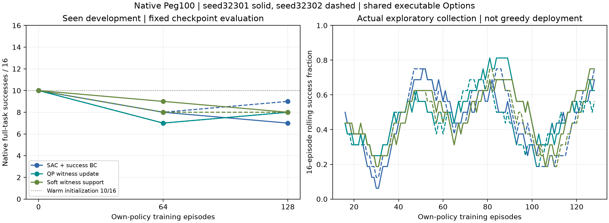
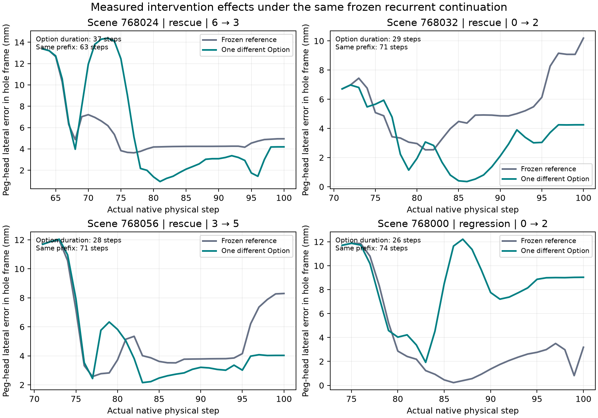
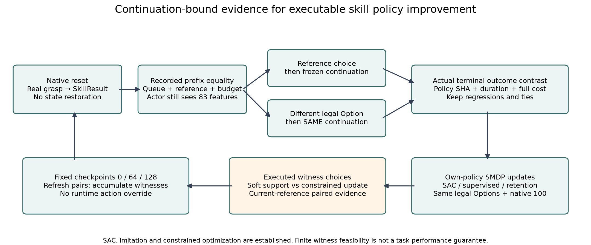
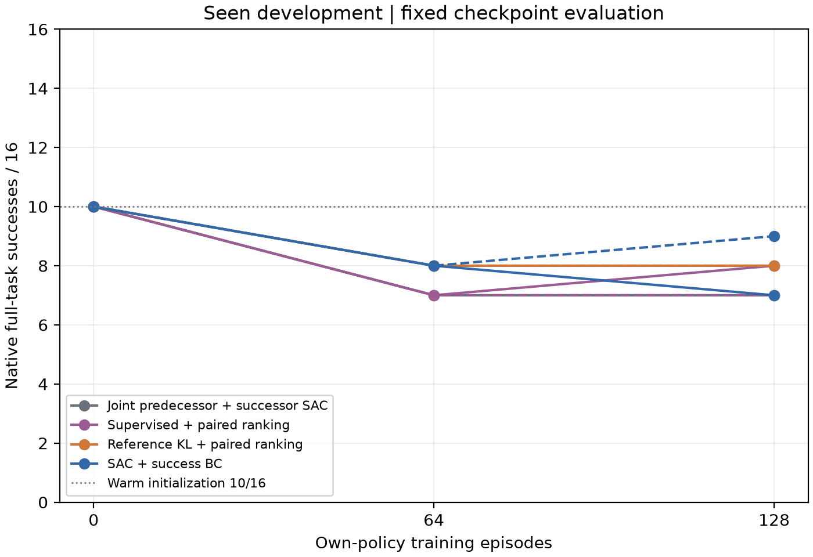
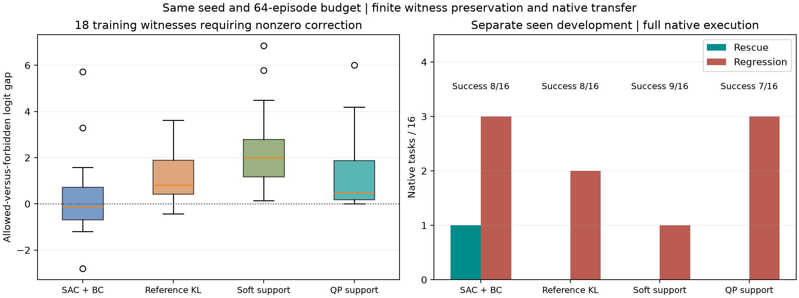
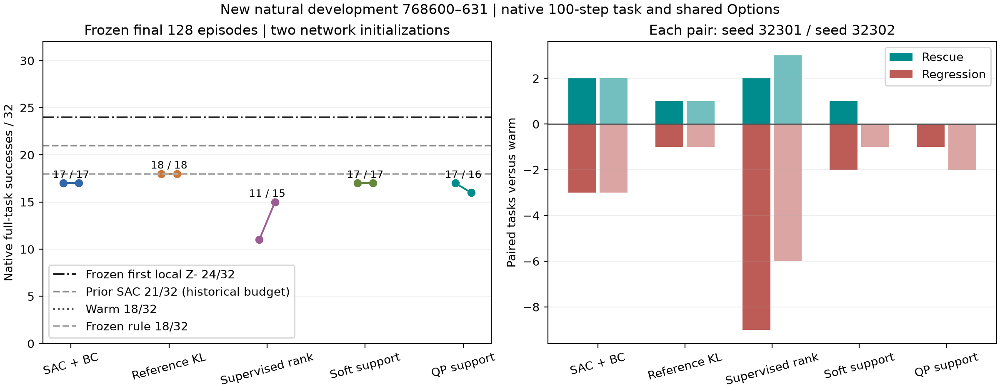
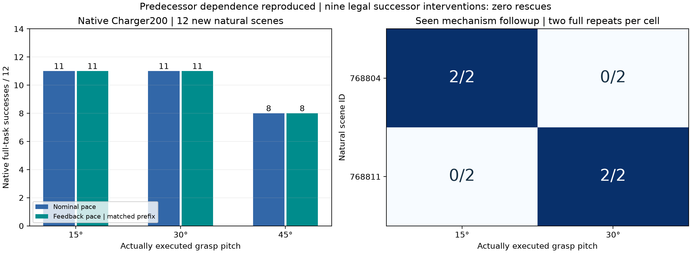

Native Peg100Actual PhysX interactionNo physical robot motion从真实干预后果到可持续的技能策略改进
ARES SCI · 2026-11-08 · baseline d4a20b0
保留强规划器、真实抓持、83维观测和13个后继选择。区分物理动作机会、学习器更新正确性和完整任务收益。
研究结论 · 训练机制与修订 · 最近邻与源码 · 复算数据 · 原始归档与SHA
先看结论：执行能力仍强于当前学习选择
冻结首次local-Z− Option：24/32，9次救回、3次退化；历史full-option SAC：21/32；warm：18/32。 新SAC17/17，KL18/18，软保留17/17，QP17/16。主要算法均完成两独立初始化、128回合各自策略采集。
QP在训练见证上有实际保留效果，但没有新条件救回，未形成独立方法增益。固定策略有一位本地动作历史，历史SAC有不同数据预算，均作为强参照明确标注。
Charger新增99次真实执行发现可重复的抓持交叉效应；严格同前缀后反馈与名义成败相同，9次后继参数试验未救回。不制造第二任务学习收益。
观看冻结固定策略的真实救回 · 主结果及成本 · 强参照与消融 · 第二任务实测
本轮可证伪问题
平均KL接近是否足以保留必要干预？在同一实际执行见证上，软集合模仿与约束参数更新，能否改善完整任务的救回/退化平衡？
名义继续不是撤销既往修正。selector0是规则chunk，physical0是继续当前队列。投影、KL、SAC、成功BC都是成熟构件；有限记录约束不保证未见物理状态安全。独立方法收益必须由同预算实际结果决定。
固定检查点 · 已见开发768400–415
救回/退化相对相同初始化10/16。原近似投影的64回合版本是保留的数值停滞诊断，不能与128回合终点混为等预算比较。所有中间检查点均显示。
冻结的新自然条件 ·768600–631
仅显示实际执行结果；空表表示尚未开启。该组是新的开发确认，不是封存测试。两种子共享场景，不能当64个独立任务。历史oldRL/上一轮SAC具有不同训练预算和执行接口，单列参照。
真实在线采集与训练成本
每个学习臂另使用同一189次初始物理采集；全局只计一次。每臂64回合后按相同16场景/最多两替代动作规则重新采集，合法动作可用性导致实际分支数不同，明确报告。前驱冻结是任务条件化的warm策略，jointSAC单独开放前驱学习。
训练见证的完整原生重执行
预先选定8个原有成功及3个存在已测救回的训练场景；仅验证训练侧保留，不是泛化。
新增策略分歧采集
在新的连续32场景上选择最早可执行分歧边界，按原生初态重执行。该批未供本轮冻结模型训练；与早期循环采样不是同场景随机对照，不主张采集效率优势。
{
"reference_scenes": 32,
"reference_success": 22,
"finite_union": 23,
"pairs": 33,
"positive": 2,
"negative": 4,
"ties": 27,
"scope": "Additional design, not used by the primary128-episode trained arms; different scenes from cyclic acquisition, not a controlled acquisition-efficiency comparison"
}Actual learning and fixed-checkpoint native deployment
Vector PDF
Original-reset physical branches under the same frozen continuation
Vector PDF
Reference-bound physical evidence and actual online policy updates
Vector PDF
First actual method iteration: shared-data matched learners
Vector PDF
Recorded action margins versus actual native deployment
Vector PDF
Frozen new-condition rescue and regression
Vector PDF
Actual second-task predecessor dependence and matched controls
Vector PDF
全局实测成本与边界
3637次实际原生执行，373600物理步，34367次规划调用；Peg100与新增Charger200分项见SUMMARY.task_costs；累计规划153.5秒，累计回合墙钟（含规划/封装）21133.8秒。API时间是回合时间的一部分，不能相加；并发后的整体墙钟与这些累计值不同。
终止/失败记录：{'HORIZON': 249, 'PLAN_FAILED': 15, 'SERVO_IK_FAILED': 5, 'CHARGER_NOT_GRASPED': 12}。HORIZON是原生预算结束记录，不自动等同基础设施崩溃。全部负轨迹保留。
初始64场景35个warm成功，125条物理配对含4条救回、22条退化、99条平局；有限实测成功并集38/64不是部署分数或全局上限。正例多数已接近终点，不能单凭它们声称解决了长续接学习。